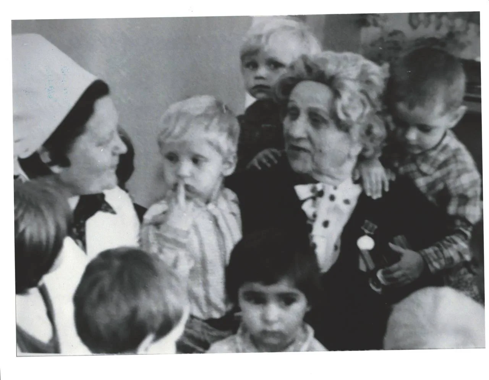
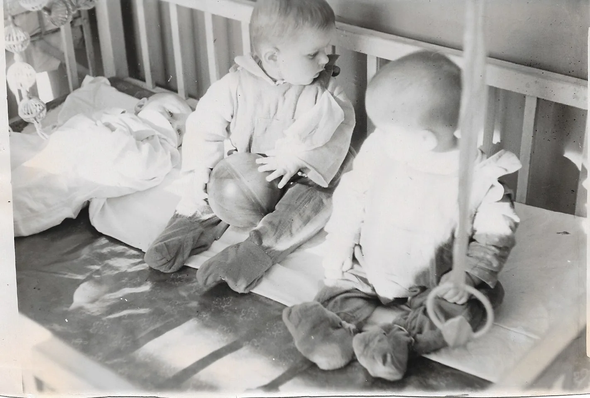
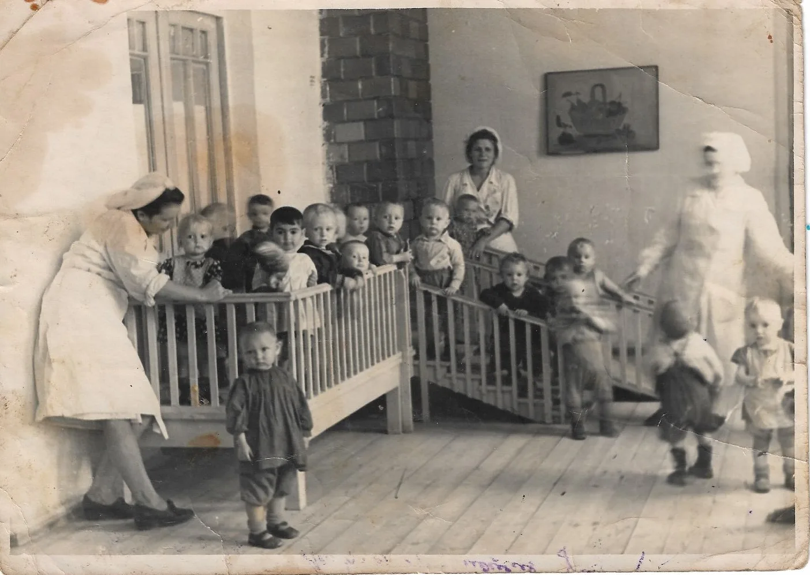
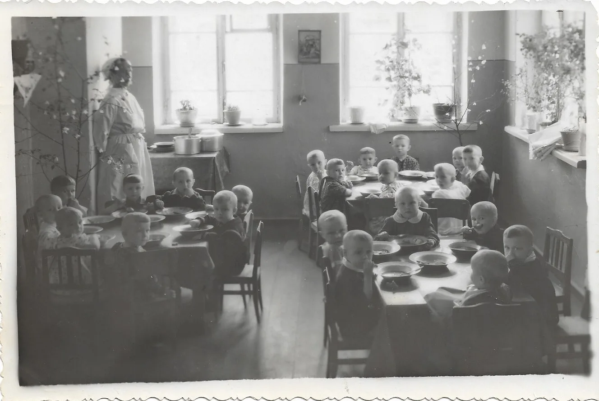
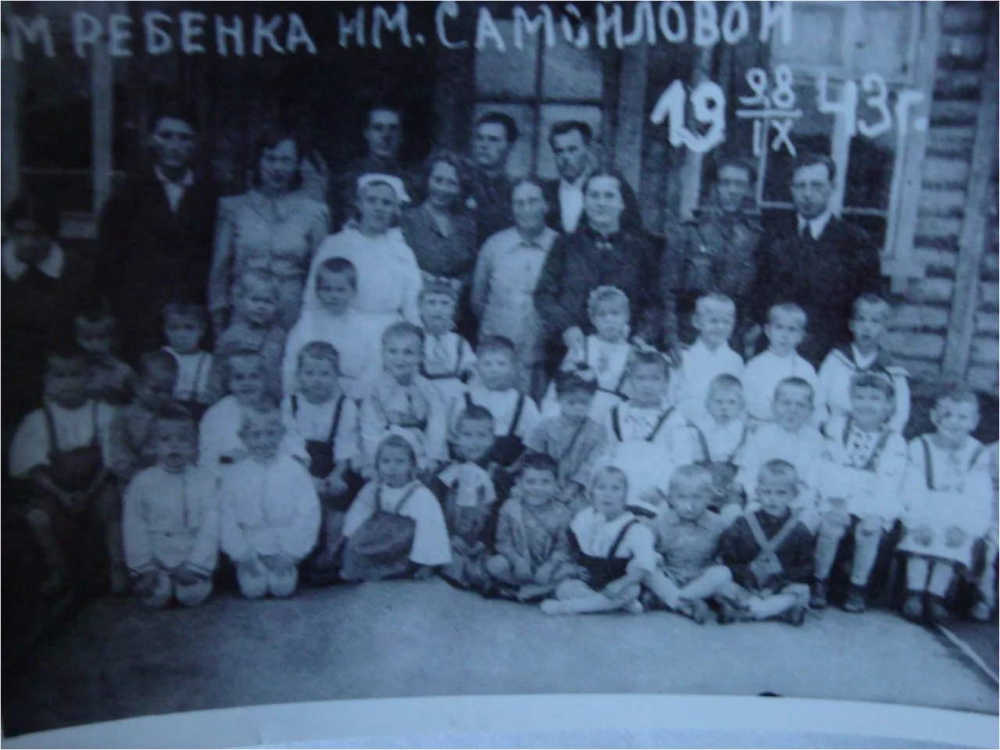
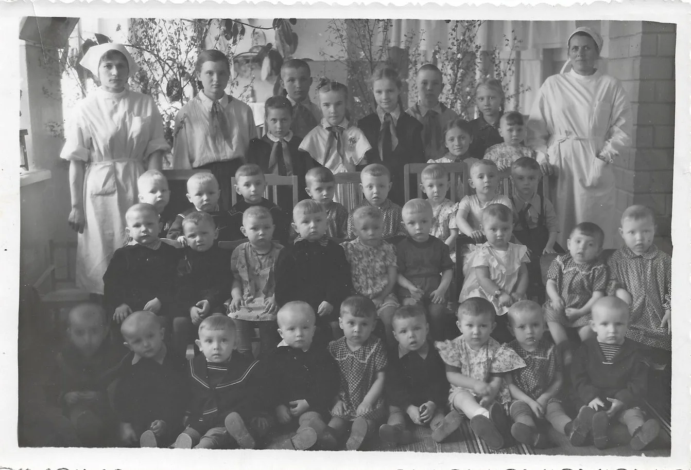
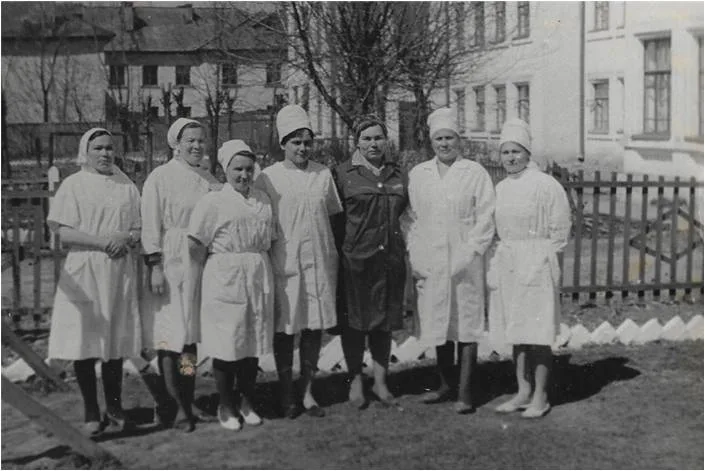

Прошлое в цвете
Каждое видео начинает свой рассказ с чёрно-белого кадра, а затем раскрывается в цвете. Нажмите на изображение, чтобы начать.

Портнова Полина Сергеевна с воспитанниками (1981 год)

Воспитанники ясельной группы

Воспитанники ясельной группы

Воспитанники грудной группы Дома ребёнка им.Самойловой в г.Шумерля
ЧССР (1944 год)

Воспитанники Дома ребёнка им.Самойловой в г.Шумерля ЧССР (1943
год)

Воспитанники Дома ребёнка им.Самойловой в г.Шумерля ЧССР (1944
год)

Работники Детских яслей №1